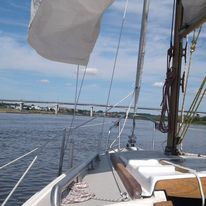

Apie..
Apie mane.. Gimiau saulėtą 75 – ų metų liepos mėnesį Jurbarke. Ten ir užaugau su sese. Vasaras leisdavau, iš pradžių su tėvais, vėliau – su draugais, Nemuno pakrantėje. Vieną pavasarį, jau buvo prasidėjęs ledonešis, nusprendėm paplaukioti ant didelės ledo lyties. Viskas buvo neblogai kol ji nepradėjo tolti nuo kranto. Priėmiau sprendimą šokti į vandenį. Kadangi Nemunas buvo patvinęs ir išsiliejęs į pievas, tai nusprendėm, kad bus negilu (ačiū visiems angelams sargams!) Sušlapom iki kelių. Tokie nedrįsom eiti namo – būtumėm gavę didžiausią bausmę, savaitę neišeiti į lauką – tai tipo „džiuvom“ trindamiesi lauke. Parsiradom gal kokią septintą vakaro. Keista, kad jokia liga neprikibo. O šiaip nuo mažens turėjau aiškią savo nuomonę. Ne visada ji buvo teisinga, bet ji buvo mano.